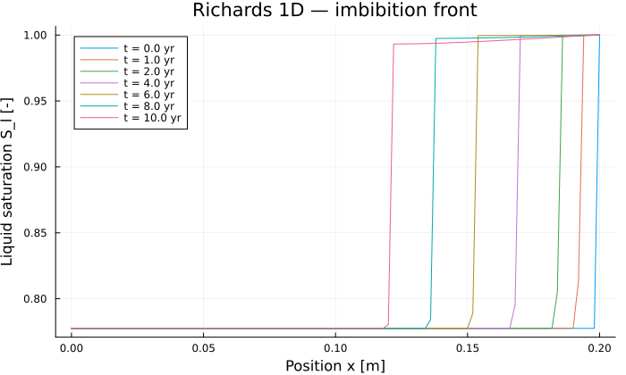

Richards Equation 1D — Barrier Imbibition
Progressive imbibition of an initially dry containment barrier, in the Van Genuchten / Mualem formulation, on VoronoiFVM.jl. The liquid pressure $p_l$ [Pa] is the only unknown.
Physical problem
\[\rho_l \phi \frac{\partial S_l(p_c)}{\partial t} + \nabla \cdot W_l = 0\]
with the unsaturated Darcy flux
\[W_l = -K_l \nabla p_l + K_l \rho_l g, \qquad K_l = \frac{\rho_l k_\text{int} k_{rl}(p_c)}{\mu_l}\]
and the capillary pressure $p_c = p_g - p_l$.
| Boundary | Condition |
|---|---|
| $x = 0$ (left) | Zero Neumann — impermeable |
| $x = L$ (right) | Dirichlet $p_l = p_g$ — full saturation imposed |
The initial condition is $p_l = -7.611\,930 \times 10^7$ Pa throughout: a dry barrier.
Retention curves
Liquid saturation, Van Genuchten:
\[S_l(p_c) = \begin{cases} 1 & p_c \leq 0 \\ \left(1 + \left(p_c / a_{S_l}\right)^n\right)^{-m_{S_l}} & p_c > 0 \end{cases}, \qquad n = \frac{1}{1 - m_{S_l}}\]
Relative permeability, Mualem:
\[k_{rl}(p_c) = \sqrt{S_e} \left(1 - \left(1 - S_e^{1/m_{krl}}\right)^{m_{krl}}\right)^2, \qquad S_e = \left(1 + \left(p_c / a_{krl}\right)^n\right)^{-m_{krl}}\]
Parameters (material "bo")
| Symbol | Value | Unit | Description |
|---|---|---|---|
| $\phi$ | $0.30$ | — | Porosity |
| $\rho_l$ | $10^3$ | kg/m³ | Liquid density |
| $k_\text{int}$ | $10^{-20}$ | m² | Intrinsic permeability |
| $\mu_l$ | $10^{-3}$ | Pa·s | Dynamic viscosity |
| $p_g$ | $10^5$ | Pa | Gas pressure |
| $a_{S_l}$ | $1.5 \times 10^6$ | Pa | Van Genuchten parameter ($S_l$ curve) |
| $m_{S_l}$ | $0.06$ | — | Van Genuchten exponent ($S_l$ curve) |
| $a_{krl}$ | $3.0 \times 10^6$ | Pa | Van Genuchten parameter ($k_{rl}$ curve) |
| $m_{krl}$ | $0.5$ | — | Mualem exponent ($k_{rl}$ curve) |
The case is horizontal, so $g = 0$ and the physics is purely capillary.
using PoroMechanics
using VoronoiFVM
using ExtendableGrids
using PrintfThe model
RichardsModel lives in the package, not in this script: the equation is the same whatever column it is solved on, and only the material data, the geometry and the boundary conditions belong here. That split is the whole point of having a library — the physics is written once, documented once, and differentiable once.
The retention and relative-permeability curves come from the constitutive layer. Both are type-stable for ForwardDiff.Dual, which VoronoiFVM needs for the Jacobian, and both carry their coefficients as type parameters, so a result can also be differentiated with respect to retention.a or rel_perm.m.
The imposed pressure is given as data — dirichlet = ((2, p_g),), meaning "impose $p_g$ on boundary region 2" — rather than written into a method, so the same model can be used with the boundary on the other side without editing anything.
richards_material(; p_g = 1.0e5) = RichardsModel(;
phi = 0.30, # porosity [-]
rho_l = 1.0e3, # liquid density [kg/m³]
k_int = 1.0e-20, # intrinsic permeability [m²]
mu_l = 1.0e-3, # dynamic viscosity [Pa·s]
p_g = p_g, # gas pressure [Pa]
gravity = 0.0, # horizontal column
retention = VanGenuchten(1.5e6, 0.06),
rel_perm = Mualem(3.0e6, 0.5),
dirichlet = ((2, p_g),), # full saturation at x = L
)richards_material (generic function with 1 method)Solving
The permeability $k_\text{int} = 10^{-20}$ m² makes this case extremely stiff: the characteristic times are decadal, yet the gradients near the front are steep.
"""
run_richards(; L, N, t_max_ans, verbose)
- `t_max_ans` : simulated duration in years (10 for a quick test, 100 for the full run)
- `verbose` : print Newton iterations and time steps
"""
function run_richards(; L = 0.2, N = 101, t_max_ans = 10, verbose = false)
m = richards_material()
grid = simplexgrid(range(0.0, L; length = N))
sys = fvm_system(m, grid)
# Initial condition: p_l = −7.611930e7 Pa (dry state)
inival = unknowns(sys)
inival[1, :] .= -7.611930e7
inival[1, end] = m.p_g # pre-apply the right-hand BC
an = 3.1536e7 # one year in seconds
t_max = t_max_ans * an
# Output times up to t_max
all_saves = [0.0, 1an, 2an, 4an, 6an, 8an, 10an, 20an, 40an, 50an, 100an]
tsave = filter(t -> t ≤ t_max + 1.0, all_saves)
tsave[end] != t_max && push!(tsave, t_max)
ctrl = VoronoiFVM.SolverControl(;
Δt = 1.0e6,
Δt_max = an,
Δt_min = 1.0,
# The total range of p_l is ~7.7e7 Pa.
# Δu_opt = 1e5 Pa means 0.13 % variation per step → far too restrictive
# (27 000+ steps for 10 years). 1e6 Pa ≈ 1.3 % stays accurate and cuts
# the step count by a factor of ~10.
Δu_opt = 1.0e6,
reltol = 1.0e-4,
abstol = 1.0e-8,
verbose = verbose,
)
tsol = solve(sys; inival, times = tsave, control = ctrl)
return tsol, grid, m, tsave, an
end
tsol, grid, model, tsave, an = run_richards()([-7.61193e7 -7.61193e7 … -7.61193e7 100000.0;;; -7.61193e7 -7.61193e7 … -7.544217414151426e7 100000.0;;; -7.61193e7 -7.61193e7 … -7.460678802681065e7 100000.0;;; … ;;; -7.61193e7 -7.61193e7 … 93342.70855563146 100000.0;;; -7.61193e7 -7.61193e7 … 93331.7571265825 100000.0;;; -7.61193e7 -7.61193e7 … 93393.01972750867 100000.0], ExtendableGrids.ExtendableGrid{Float64, Int32}(dim=1, nnodes=101, ncells=100, nbfaces=2), RichardsModel{Float64, Float64, VanGenuchten{Float64}, Mualem{Float64}, Tuple{Tuple{Int64, Float64}}}(0.3, 1000.0, 1.0e-20, 0.001, 100000.0, 0.0, 1, VanGenuchten{Float64}(1.5e6, 1.0638297872340425, 0.06), Mualem{Float64}(3.0e6, 0.5), ((2, 100000.0),)), [0.0, 3.1536e7, 6.3072e7, 1.26144e8, 1.89216e8, 2.52288e8, 3.1536e8], 3.1536e7)Results
using Plots
xcoords = grid[Coordinates][1, :]
nn = length(xcoords)
sat_at(i, it) = liquid_saturation(model, model.p_g - tsol[1, i, it])
"""Column water content ∫ φ S_l dx [m], by the trapezoidal rule."""
function water_content(it)
return model.phi * sum(
(sat_at(i, it) + sat_at(i + 1, it)) / 2 *
(xcoords[i + 1] - xcoords[i]) for i in 1:(nn - 1)
)
endMain.water_contentThe wetting front is the leftmost node whose saturation has risen appreciably above the initial value. Water enters at the saturated boundary $x = L$, so the front travels right to left and its position decreases with time.
function front_position(it; δ = 1.0e-3)
sl_dry = sat_at(1, 1)
i = findfirst(i -> sat_at(i, it) > sl_dry + δ, 1:nn)
return i === nothing ? xcoords[end] : xcoords[i]
endfront_position (generic function with 1 method)Front progression
i_probe = round(Int, 0.9 * (nn - 1)) + 1 # a node the front does reach
@printf("t [years] | front x [m] | water content [m] | S_l[x=%.2f m]\n", xcoords[i_probe])
println("-"^72)
for t_s in tsave
it = argmin(abs.(tsol.t .- t_s))
@printf(
"%-14.4f | %11.4f | %17.6e | %.6f\n",
tsol.t[it] / an, front_position(it), water_content(it), sat_at(i_probe, it)
)
endt [years] | front x [m] | water content [m] | S_l[x=0.18 m]
------------------------------------------------------------------------
0.0000 | 0.2000 | 4.671799e-02 | 0.777521
1.0000 | 0.1920 | 4.713982e-02 | 0.777521
2.0000 | 0.1840 | 4.766841e-02 | 0.777521
4.0000 | 0.1680 | 4.872980e-02 | 0.999823
6.0000 | 0.1520 | 4.979170e-02 | 0.999785
8.0000 | 0.1360 | 5.083064e-02 | 0.998884
10.0000 | 0.1200 | 5.183032e-02 | 0.997843Physical check
The natural measure of imbibition is the water the column has taken up — not the pressure at mid-column, which stays at its initial value simply because the front has not travelled that far in ten years.
it_end = length(tsol.t)
w_ini, w_fin = water_content(1), water_content(it_end)
x_front = front_position(it_end)
@printf("water content : %.6e → %.6e m (%+.2f %%)\n", w_ini, w_fin, 100 * (w_fin / w_ini - 1))
@printf("wetting front : x = %.4f m after %.1f years\n", x_front, tsol.t[it_end] / an)
if w_fin > w_ini
println("✓ the column took up water (imbibition confirmed)")
else
println("✗ WARNING: no water uptake")
endwater content : 4.671799e-02 → 5.183032e-02 m (+10.94 %)
wetting front : x = 0.1200 m after 10.0 years
✓ the column took up water (imbibition confirmed)Saturation profiles
p = plot(;
xlabel = "Position x [m]",
ylabel = "Liquid saturation S_l [-]",
title = "Richards 1D — imbibition front",
legend = :topleft,
size = (700, 420),
)
for t_s in tsave
it = argmin(abs.(tsol.t .- t_s))
plot!(
p, xcoords, [sat_at(i, it) for i in 1:nn];
label = "t = $(round(tsol.t[it] / an; digits = 1)) yr",
)
end
p
Key points
- Extreme stiffness — $k_\text{int} = 10^{-20}$ m² imposes decadal characteristic times, yet very steep local gradients near the front.
- ForwardDiff type-stability — essential in
_Sland_krl: usezero(pc)in the early returns, and guardsqrt(Se)against zero. Δu_opt— set to about 1 % of the range of the unknown. Anything more restrictive multiplies the step count for no accuracy gain.- No gravity — the case is horizontal, which isolates the capillary physics.